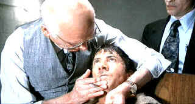

| Marathon
Man (SE)/A-,B |
| Paramount/1976/125/ANA 1.85 |
"Is it safe?" The question is repeated in even tones to
terrified Babe Levy by the prodding Szell, the Nazi fugitive with a devious dental style. Szell does not let up until he
is convinced that he has the right answer. It appears that director John Schlesinger asks the
question "Is it good?" over and over again until achieving a slice of perfection in
bringing the William Goldman thriller to riveting film fruition.
 |
|
Not your everyday dentist.
©Paramount
|
Babe Levy is a graduate student at a New York University. He is lives
with the ghost of his father's suicide in light of the early fifties internal political upheaval in
the United States. His older brother Doc appears to be working for a covert government
organization. As events in Paris, South America and New York boil over to a nasty conclusion, Babe
Levy is dragged into the scolding water. The collision of indeterminate players springs to life in
the streets of New York.
It's hard to believe that Dustin Hoffman is almost forty years old
playing the youthful graduate student Babe Levy. But Hoffman brings it off convincingly. Hoffman's
natural nervous screen energy strings out Babe Levy's wire for maximum tension. Laurence
Olivier, wan and frail as the Nazi Szell, is calmly frightening as the demented dentist. His speech
patterns highlighted by carefully enunciated vowels, Olivier invests Szell with pure evil. Roy
Scheider has the slick and leathery look of a snake coiled before striking. You only wish there
were more scenes for his Doc Levy. Marthe Keller is the fem fatale used to lure Babe deeper in the
pot and William Devane is shady Janeway.
Perfection in craftsmanship is a hallmark of Marathon Man. Scene transitions
are incredibly eloquent without calling attention to themselves. Even cuts within the same scenes
are perfectly timed and visually seamless. Conrad Hall's photography appears to often rely on available light to capture
the perfectly composed images. Blown out windows and washed over faces emphasize the ice cold
thriller feeling. Is it safe? Nobody is safe. Michael Small's score is outstanding, emphasizing
tension by echoing the director's pacing.
Some of the plotting may be confusing. Is Doc set up as a threat to
Szell's fortune? I may have missed that for the thirty-second time. But under the astute
direction of Schlesinger, we are left little time to ponder the improbabilities. The final
scenes never fail to thrill me and send chills down my spine. Marathon Man is a terrific
entertainment.
The special edition includes about twenty minutes of memories shared by the
principals in newly made interview clips. Some of the remembrances overlap, but they are all
welcome. A twenty-minute making of short produced prior to the opening of the 1976 film is also
presented. There's also some fascinating rehearsal footage.
There are a few glitches in the source material, but for the most part
it is clean and stable. I would have liked to see deeper, more velvet blacks, but my instinct is
that the DVD is a fair representation of the directorial intent. Most scenes are very sharp.
Detail, like glimpses of Hoffman's teeth post dental work, are clear and horrifyingly effective.
Sound is offered up in Dolby Digital 5:1 or a restored mono track. It's clean either way.
|
|
|
|

The major studio vaults are filled with incredible film treasures which
few have seen the light of DVD.
Open the Vaults

Mother Night/A-/A-
The eccentric style of Nick Nolte is perfect for the angst ridden
Howard W. Campbell, Jr., a hero or a villain.

Selections from the Feature Archive include articles on
Akira Kurosawa, Blonde Bimbos,
Frank
Darabont, Steven
Culp, John
Herzfeld or Vietnam: The
Hollywood Pariah, and many more....
Director Walks the Wire
Balanced by an armor of movie lore and filmmaking daring, director John Herzfeld is comfortable
walking the high wire. Check out this interview by Stu Kobak.
 
ISF Monitor Calibrations in the
Tristate New York area. Lots of hardware info and frequent hardware peaks from video expert Kevin
Miller.They may be judgmental, but that's the point, isn't it. Lots of DVD reviews plus news and
more.
 Kinoeye Archive Kinoeye Archive
This is a resource of all content-rich
materials on the web relating to Central and East European cinema. The ultimate aim of the Kinoeye
Archive is to provide a near-as-damn-it definitive index of intelligent and thoughtful
English-language analysis of Central and Eastern European cinema on the web.
|